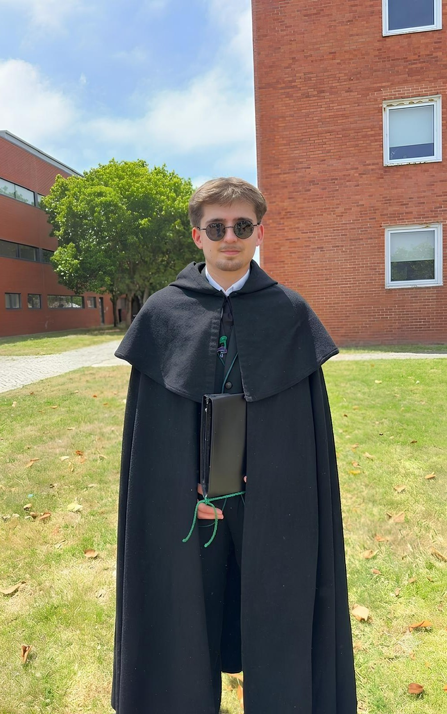

Mestrado em Engenharia de Computadores e Telemática (MECT) | DETI - Universidade de Aveiro
Departamento de Eletrónica, Telecomunicações e Informática (DETI) - UA

Descarregar CVAo longo do meu percurso académico e dos projetos em que me tenho envolvido, desenvolvi um fascínio pelo funcionamento interno das máquinas e pelas infraestruturas que as ligam. Tenho um maior interesse por áreas como Redes de Comunicação, Arquitetura de Computadores e Sistemas Digitais. Para mim, o verdadeiro desafio surge quando a tecnologia sai do nível puramente teórico e se torna palpável. Por isso, procuro aplicar estes conhecimentos na construção de soluções tecnológicas práticas, desde a otimização e programação a baixo nível num sistema embebido até à orquestração de toda a comunicação em rede, criando assim arquiteturas robustas e eficientes de ponta a ponta.
Universidade de Aveiro (DETI)
Formação em Engenharia Informática com foco particular em Arquiteturas de Sistemas Computacionais e Redes de Comunicação, orientada para a inovação tecnológica e para o desenvolvimento da infraestrutura de suporte à Sociedade da Informação.
Universidade de Aveiro (DETI)
A aprofundar competências em arquiteturas avançadas, sistemas distribuídos e infraestruturas de rede. O foco central passa por aliar o desenho de sistemas computacionais de alto desempenho à implementação de soluções de comunicação robustas, seguras e orientadas à Internet das Coisas (IoT).